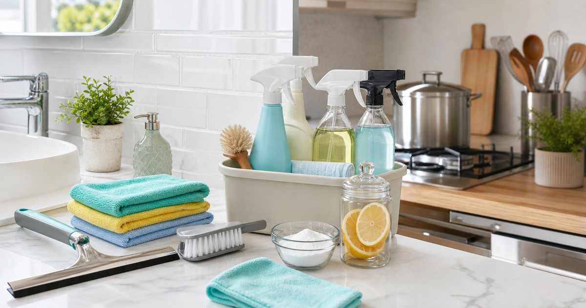

質感清潔用品怎麼選：浴室水垢、廚房油污、除臭與天然清潔
清潔用品不是越多越好。浴室、廚房、氣味與日常維持各需要不同工具，先分場景，才不會買回一堆用不完的瓶罐。

先把清潔任務分成浴室、廚房、氣味與日常維持
一瓶清潔劑很難解決所有問題。浴室水垢、廚房油污、玻璃水痕、地板灰塵、垃圾桶味道與衣物清潔，本來就是不同任務。若全部用同一套工具處理，不是清不乾淨，就是耗材用得很快。
美利購清潔劑適合放在浴室與廚房場景；Desire & Passion 天森無患偏向無患子清潔與洗沐延伸；JINKO 淨科、淨淨 Clean Clean 可作為日用清潔與氣味整理補充；GW 水玻璃則適合放在玻璃、防潑水或水痕場景中思考。
編輯部會先看清潔任務，而不是先看產品功能詞。功能越多的商品，越需要確認它到底適合哪個表面、哪種污垢，以及你會不會真的固定使用。
- 浴室：水垢、濕氣、玻璃與排水。
- 廚房：油污、檯面、餐具周邊與垃圾。
- 日常：地板、桌面、衣物與耗材補充。
浴室清潔要分水垢、皂垢與玻璃水痕
浴室看起來都是髒，但水垢、皂垢、霉斑與玻璃水痕並不是同一件事。選清潔用品時，要先看你要處理的是磁磚、玻璃、五金還是浴缸表面，不同材質可能需要不同清潔方式。
美利購清潔劑可作為浴室水垢與除垢類選項；GW 水玻璃則適合拿來理解玻璃表面、防潑水與水痕管理。使用前仍要看商品頁標示與材質適用範圍，不要在不確定的表面上直接大面積使用。
浴室清潔也要看頻率。每天洗完澡後簡單刮水，和週末一次深清，需要的是不同工具。若日常維持做得穩，強力清潔用品的使用頻率反而可以降低。
- 先在不明顯處測試，再大面積使用。
- 五金、石材、木質與特殊塗層要特別看商品標示。
廚房油污要看接觸面，而不是只看去油力
廚房清潔最容易被「強力」兩個字吸引，但真正要先看接觸面。瓦斯爐、抽油煙機、料理檯面、餐桌、鍋具周邊和地板，都不一定適合同一種清潔方式。
如果你常煮飯，可以把清潔分成每日擦拭和週末深清。每日擦拭需要的是好拿、好沖、味道不過度刺激；週末深清才需要更針對性的除油或除垢。美利購、淨淨 Clean Clean 與 JINKO 淨科可依使用情境分別放入清潔清單。
廚房還有一個容易忽略的問題：清潔用品本身也會佔空間。若檯面上已經放滿瓶罐，再增加新產品，反而讓料理前後更難清理。
- 每日清潔先求順手，週末清潔再求針對性。
- 食品接觸區域要留意沖洗與使用說明。
天然清潔不等於萬用，也要看保存與材質
Desire & Passion 天森無患這類無患子清潔或天然洗沐選項，適合重視氣味、成分感與減少刺激感的人放入比較。但天然清潔不等於適合所有表面，也不等於能取代所有功能型清潔。
選這類商品時，可以先問三個問題：要用在身體、衣物還是環境？是否需要沖洗？保存與開封期限如何？這些問題比單純追求天然字眼更實際。若家中有孩童、寵物或敏感族群，也要依商品標示和個人情況評估。
天然取向商品最適合放在日常維持，而不是承擔所有深清任務。把角色分清楚，才不會對單一產品期待過高。
- 天然取向仍需看材質適用與保存方式。
- 不要把洗沐、衣物和環境清潔混為同一類。
除臭要先找來源，再決定用品
氣味問題最怕只用香氛或除臭用品壓過去。垃圾桶、排水孔、鞋櫃、潮濕毛巾、寵物用品和冰箱，都有不同來源。沒有先找來源，再多產品也只是在短時間內蓋住問題。
JINKO 淨科和淨淨 Clean Clean 可作為氣味與日常清潔整理的選項，但文章中不會把任何產品寫成保證除臭或抗菌。比較好的使用方式，是搭配通風、定期清洗、乾濕分離與耗材替換，讓氣味來源變少。
如果氣味常常回來，先檢查垃圾、排水和濕物，而不是急著換品牌。用品只是輔助，真正的關鍵是來源管理。
- 先丟垃圾、清排水、晾乾濕物，再使用氣味用品。
- 鞋櫃、浴室和廚房要分開處理。
清潔用品也需要收納，否則會變成新的雜物
清潔用品若散在浴室、廚房、陽台和玄關，最後常常找不到真正需要的那一瓶。真蓁嚴選的掃除工具可以處理日常維持，但清潔劑、刷具、抹布和補充瓶也需要固定位置。
建議把清潔用品分成每日區、深清區和補充區。每日區放最常用的擦拭、掃除、拖地工具；深清區放除垢、除油、玻璃處理；補充區放未開封耗材。分類清楚後，你會少買很多重複功能的產品。
若家中空間很小，清潔用品可用一個提籃或窄櫃集中，使用時整組拿走，用完再放回。這比每個房間都散放一瓶更容易維持。
- 同功能產品不要同時開太多瓶。
- 清潔用品要遠離食品、孩童易取處與不適合的高溫潮濕位置。
FAQ
浴室和廚房可以共用同一瓶清潔劑嗎？
要看商品標示和使用表面。有些清潔劑適用範圍較廣，但浴室水垢、廚房油污與食品接觸區域需求不同，建議依材質和用途分開評估。
天然清潔用品一定比較安全嗎？
不一定。天然取向仍可能不適合某些材質或個人狀況。使用前應看商品標示、保存方式與適用範圍，必要時先在小範圍測試。
除臭用品可以取代清潔嗎？
不建議。除臭用品應搭配找出氣味來源、清潔、通風與乾燥。若來源沒有處理，氣味通常會反覆出現。
下一步建議
如果你要整理清潔用品，先把浴室、廚房、氣味與日常維持分成四類，再決定哪些商品真的需要補。
重要警語
本文為一般居家清潔用品選購與使用情境整理，不構成抗菌、除菌、除臭效果保證或專業清潔建議。不同材質、表面與家庭狀況需依商品頁標示、小範圍測試與安全說明評估；價格、活動與庫存請以商品頁公告為準。
本文含品牌／商品導購連結；若你透過部分商品連結前往選購，Elite Fashion 可能取得合作收益。本文仍以編輯判斷與使用情境整理為主，價格、規格、活動與庫存請以商品頁公告為準。